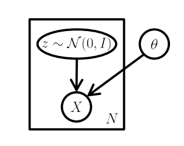

Generative Modeling and Approximate Inference#
In generative modeling we want to model the generative distribution of the observed variables \(\mathbf x\), \(p(\mathbf x)\) 1.
Take for example a set of images that depict a pendulum excited by a force. We would like to generative the successive frames of the pendulum swinging behavior and we do so we are assisted by a set of latent variables \(\mathbf z\) that represent the underlying laws of physics. Generative modeling is especially well suited for
Testing out hypotheses about the underlying rules that generated the observed data. Such rules can also offer interpretable models.
Ability to capture causal relationships, since the ability of a factor to generate data very close to the ones observed, offers a strong indication of such relationship.
Semi-supervised classification where the generated data are very close to already labeled data and therefore can improve classification model accuracy.
One of the main methods of generative approximate inference is variational inference and VAE is a modified instantiation of such inference and it involves: (a) deep latent variable models and (b) inference models both learned using stochastic gradient descent. Before we go deeper into what VAE is, its worth motivating the discussion as to why it came to be the solution to the generative problem we face.
In probabilistic modeling, we usually make use of latent variables \(\mathbf z\), variables that are not observed but can be used to build suitable representational constraints in our models, and a set of parameters \(\theta\) that parametrize the latent variable model \(p(\mathbf x, \mathbf z | \mathbf \theta)\). Since,
to generate new data whose marginal is, ideally, identical to the true but unknown target distribution we need to be able to sample from \(p(\mathbf x, \mathbf z | \mathbf \theta)\).
The introduction of the latent variables can be represented as directed graph and we have seen in the probabilistic graphical models introduction, the representation as directed graph allows the factorization of the joint distribution
where \(Pa()\) is the set of parent nodes that the variable \(\mathbf x_j\) is dependent on (has directed edges with).
Consider our simple PGM, shown below:
 Probabilistic Graphical Model from here
To generate from the marginal we need to implement a generative model that is a direct consequence of the chain and total probability rules.
The elements of this model are \(p(\mathbf x| \mathbf z ; \mathbf \theta)\) and the \(p(\mathbf z | \theta)\) that is often called the prior distribution over \(\mathbf z\). One of the methods of generating such samples is to start from a very easy to sample distribution and use function approximation that maps variables to the distribution parameters over these variables. One of the best function approximators that scale very well for the, usually large, dataset sizes we face are Deep Neural Networks (DNNs). When DNNs are used, we say that we implement a deep latent variable model that involves the following two steps:
In deep latent variable models of the form we are concerned with, we select an easy to sample from, prior distribution
and let the DNN implement the mapping
However we are facing the following situation: Even with DNNs when we use DNN to automatically “design” the right feature coordinates in the latent space 2, we are still facing an intractable computationally model in trying to estimate the marginal distribution \(p(\mathbf x | \mathbf \theta)\).
To understand why, consider the MNIST dataset and the problem of generating handwritten digits that look like that. We can sample from \(p(\mathbf z | \theta)\) generating a large number of samples \(\{z_1, \dots , z_k\}\), since the DNN provided all the parameters of this distribution. We can then compute \(p(\mathbf x) = \frac{1}{k} \sum_i p(\mathbf x|z_i)\). The problem is that we need a very large number of such samples in high dimensional spaces such as images (for MNIST is 28x28 dimensions) . Most of the samples \(\mathbf z_i\) will result into negligible \(p(\mathbf x|z_i)\) and therefore won’t contribute to the estimate of the \(p(\mathbf x)\). This is the problem that VAE addresses. The key idea behind its design is that of inference of the right latent space that when sampled, results into a computation and optimization of the marginal distribution with far less effort than before.
- 1
Following this tutorial we adopt the compact notation that serializes into one vector \(\mathbf x\) all the observed random variables.
- 2
Note that the features that the DNN captures are not interpretable as the intuitively understood features that humans consider. For the MNIST dataset for example, humans will consider the slant of each digit, thinner strokes etc.